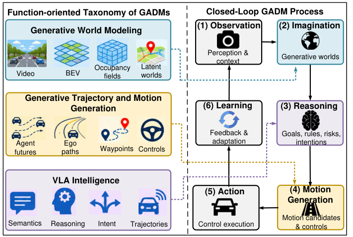

Generative World Modeling
Video, geometric and occupancy, latent and agent-centric world representations for future prediction and interactive simulation.
SURVEY PROJECT PAGE · 2026
Xi’an Jiaotong-Liverpool University · University of Electronic Science and Technology of China · Khalifa University · New Jersey Institute of Technology
A companion page to the survey manuscript. Public paper and publication links will be added when available.
OVERVIEW
This survey connects generative world modeling, generative trajectory and motion planning, and vision-language-action (VLA) intelligence through their roles in closed-loop driving decisions.

PAPER SUMMARY
Generative models are advancing autonomous driving by enabling the generation of plausible future scenarios, interactive environment representations, and diverse motion trajectories, while supporting multimodal reasoning and action generation. However, existing surveys remain fragmented across generative world modeling, trajectory generation, and Vision-Language-Action (VLA) intelligence, seldom examining their interfaces, functional convergence, and implications for closed-loop driving safety. This survey provides a unified perspective on Generative Autonomous Driving Models (GADMs) by systematically examining three research directions: generative world modeling, generative trajectory and motion planning, and VLA intelligence. We first establish the foundations and taxonomy of GADMs and introduce a conceptual closed-loop framework that connects observation, imagination, reasoning, motion generation, action, and learning. Then, representative studies are reviewed in terms of their generative mechanisms, key inputs, generated outputs, and interfaces with downstream driving functions. Automated Valet Parking (AVP) is considered the last-mile extension of autonomous driving and a challenging application setting for GADMs. Beyond examining these directions individually, we identify four complementary properties that characterize their emerging convergence as action sensitivity, semantic-geometric consistency, consequence-aware action selection, and closed-loop adaptation. We further synthesize datasets, benchmarks, and evaluation metrics relevant for GADMs and their functional convergence. Finally, we identify open challenges and future research directions toward unified and converging GADMs.
RESEARCH SCOPE
Video, geometric and occupancy, latent and agent-centric world representations for future prediction and interactive simulation.
Multimodal forecasting, ego-motion generation, and joint prediction-planning with candidate-action evaluation.
Semantic grounding, language-conditioned trajectories and actions, and agentic or cooperative closed-loop reasoning.
FUNCTIONAL CONVERGENCE
Sharing a backbone does not establish convergence. The survey examines whether generated futures and reasoning measurably influence downstream driving behavior.
Futures respond to candidate ego actions.
Semantic intentions remain grounded in geometry and dynamics.
Predicted outcomes guide motion choice.
New observations and feedback inform subsequent decisions.
APPLICATION & RESOURCES
The survey also considers Automated Valet Parking (AVP) as a demanding last-mile application and discusses datasets, benchmarks, and metrics for evaluating generative quality, planning utility, safety, and closed-loop performance.
REFERENCE
Please cite the survey when using this resource. A formal bibliographic record will be added once the manuscript is publicly available.
@misc{boateng2026gadms,
title = {A Survey on Generative Autonomous Driving Models:
Foundations, Taxonomy, and Convergence},
author = {Boateng, Gordon Owusu and Dong, Qian and
Jia, Dongyao and Guo, Xiansheng and
Mourad, Azzam and Ansari, Nirwan},
year = {2026},
note = {Manuscript}
}Provisional citation only; not a claim of journal acceptance or publication.